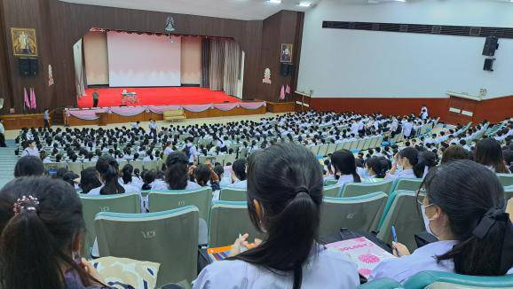

ในโรงเรียน

โรงเรียนเตรียมอุดมศึกษา
การสอบในโรงเรียน ของสายวิทย์คณิตมี
-Formative 1 มีซ่อม มีพัฒนาคะแนน
ของสายวิทย์คณิต วิชา เลขง่าย เลขยาก ฟิสิกส์ เคมี และชีวะ เป็นข้อเขียน เติมคำ ทั้งหมด
ของวิชาเลขยากและเลขง่ายส่วนใหญ่จะเป็นแบบฝึกหัดในคลาสรูม (เทอมหนึ่ง) หรือชีทที่ให้เอากลับไปทำบ้านได้(เทอมสอง) แต่ไม่ได้หมายความว่าจะไม่มีสอบเก็บคะแนน
วิชาฟิสิกส์อัตนัย
เคมีอัตนัยและเติมคำ
ชีวะ มีงานให้ทำ
สังคมสอบ for1 พร้อมกับสอบ summative เป็นอัตนัย
วิชาอื่นๆสั่งงาน
-Summative (กลางภาค) มีซ่อม มีพัฒนาคะแนน
ของสายวิทย์คณิต
วิชาเลขง่าย และเลขยาก เป็นข้อสอบอัตนัย และเติมคำ
วิชาฟิสิกส์ เป็นข้อสอบแสดงวิธีทำทั้งหมด
วิชาเคมี และชีวะ เป็นข้อสอบอัตนัย และเติมคำ
ส่วนวิชาอื่นๆ จะมีได้ทั้งข้อเขียน ข้อเติมคำ และข้อกา แล้วแต่วิชา
มีแค่วิชาวิทยาศาสตร์พื้นฐานที่เป็นข้อสอบปรนัยทั้งหมด
-Formative 2 (เก็บคะแนนหลังกลางภาค) มีซ่อม มีพัฒนาคะแนน (บางวิชาไม่มีซ่อมหรือเป็นเเบบฝึกหัด)
วิชาเลขง่ายและเลขยากเป็นชีท
เคมีคือแบบฝึกหัด
ชีวะคือแลป
ฟิสิกส์สอบเท่านั้นแต่เป็นข้อสอบปรนัย 5 choice
วิชาอื่นสั่งงาน
-Final (ปลายภาค)
เป็นข้อสอบปรนัยทุกวิชา ไม่มีซ่อม